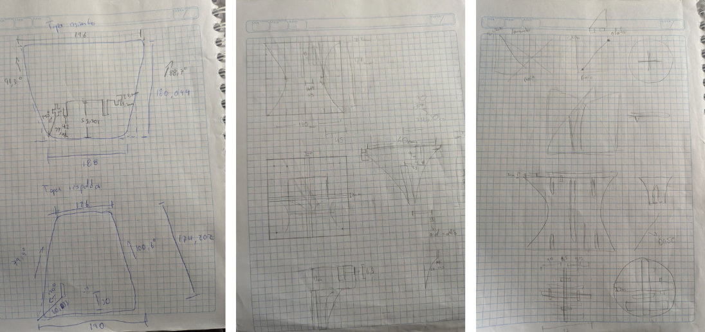
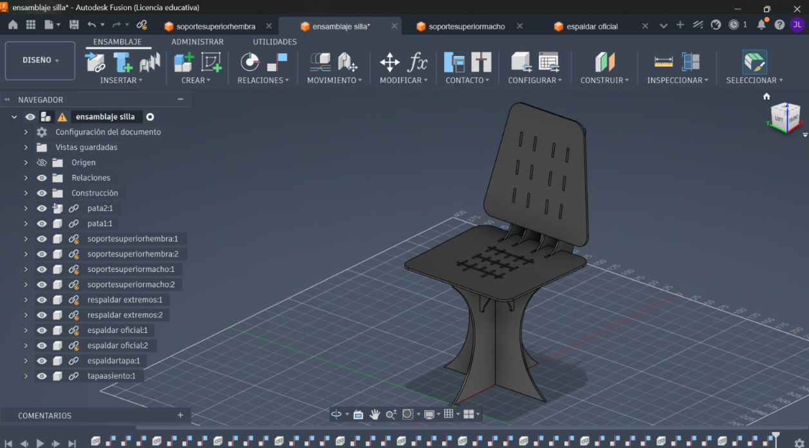

⚙️ Development Process
Stage 1 - Needs Analysis
Statistical review of IKEA chair reviews processed in RStudio. You will find more of the stadistics here
📄 Download Full Word ReportStage 2 - FINK Method
Research and analysis of existing MDF chair solutions.

Stage 3 - Sketching
Technical drawings with dimensions and joints.

Stage 4 - Software Design
Parametric modeling with precise tolerances.

Stage 5 - Laser Cutting
Cutting MDF sheets at UCuenca FabLab.
Stage 6 - Final Assembly
Complete assembly and packaging of the chair.